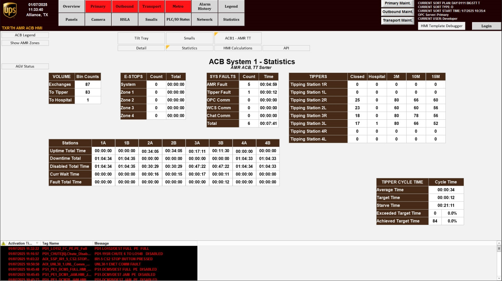

| Procedure ID | proc_check_acb_system_statistics_screen_check_v1 |
|---|---|
| Title | Check ACB System Statistics (robot faults, system faults, cycle time, tipping station bag counts) on the ACB System Statistics screen |
| Procedure Type | diagnostic |
| Primary Role | operator |
| Support Safe | Yes |
| Capability Tags | fleet_system_status |
| Access Surface | tipper_hmi |
| Audience Roles | operator |
| Failure Pattern Tags | None |
| Validation Status | needs_sme_review |
| Merge Status | source_finalized |
Open the OptiSweep Tipper HMI/WebVisu “ACB System” screen, press “STATISTICS” to view the “ACB System Statistics” screen, and verify the displayed ACB metrics: number of robot faults, number of system faults, cycle time, and tipping station bag counts.
Use when you need a quick, on-screen view of current Automated Carton Buffer (ACB) statistics—robot faults, system faults, cycle time, and tipping station bag counts—on the live OptiSweep HMI.

Responsible role: operator
Instruction:
On the Tipper HMI/WebVisu/VISU, open the “ACB System” screen, then press the “STATISTICS” button to access the “ACB System Statistics” screen.
Expected result:
The “ACB System Statistics” screen opens successfully.
Stop or Escalate If:
Responsible role: operator
Instruction:
On the “ACB System Statistics” screen, locate the displayed values for: (1) number of robot faults, (2) number of system faults, (3) cycle time, and (4) tipping station bag counts.
Expected result:
All four metric areas are visible and you can read the displayed values for robot faults, system faults, cycle time, and tipping station bag counts.
Stop or Escalate If:
Responsible role: operator
Instruction:
Verify that the “ACB System Statistics” screen shows numeric/statistical values (not blank/missing) for all four metrics: robot faults, system faults, cycle time, and tipping station bag counts.
Expected result:
The four metrics are populated with numeric/statistical values.
Stop or Escalate If: